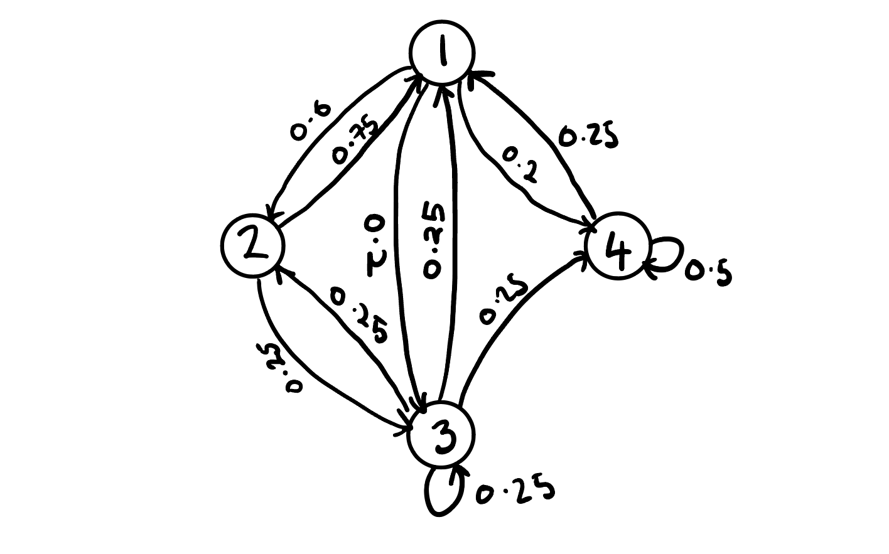
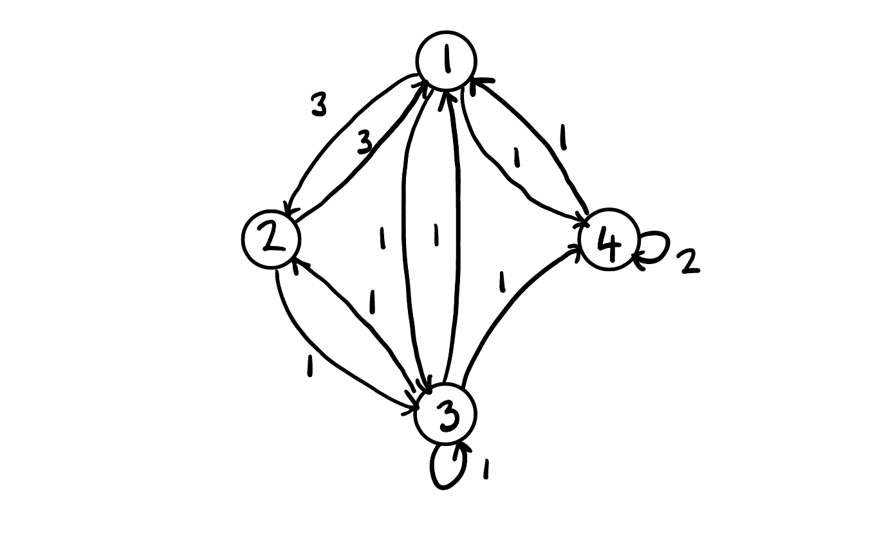
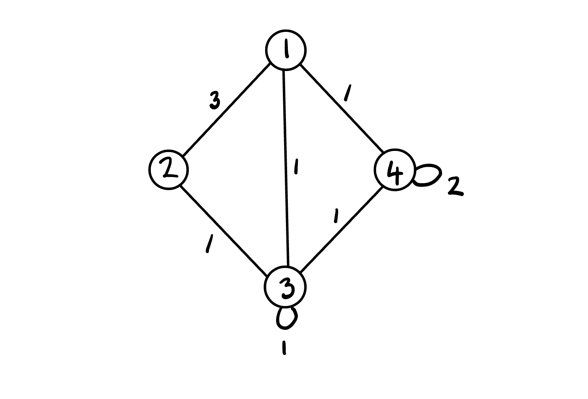
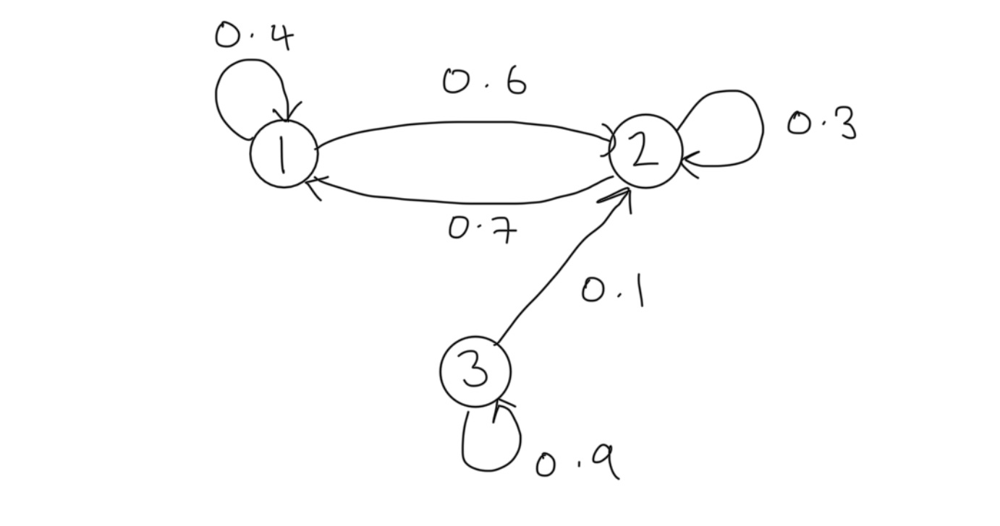

P = np.array([
[.4, .6, 0],
[.7, .3, 0],
[0, .1, .9]
])
P3 = np.linalg.matrix_power(P,3); print(P3)[[0.526 0.474 0. ]
[0.553 0.447 0. ]
[0.112 0.159 0.729]]Markov property, transition probabilities, state distributions, Chapman-Kolmogorov equations and an index of the sub-topics.
John Robin Inston
February 12, 2026
November 4, 2026
In probability theory a stochastic process is said to satisfy the Markov property if its future evolution is independent of its history, that is, the process is memoryless. Consider a discrete time stochastic process \(\{X_t\}_{t\in\mathbb{N}}\) defined in the probability space \((\Omega,\mathcal{F}, \mathbb{P})\).
The discrete time stochastic process \(\{X_t\}_{t\in\mathbb{N}}\) is said to satisfy the Markov property if
\[ \mathbb{P}(X_{n+1}=x_{n+1}|X_n=x_n, ..., X_1=x_1) =\mathbb{P}(X_{n+1}=x_{n+1}|X_n=x_n). \]
Intuitively, we see that we gain no additional information about the probability of the next value of the process by conditioning on the entire history rather than the latest value. Any process satisfying the Markov property is called a Markov process (see Markov Property for the general and strong versions, and Markov Process for continuous time).
A Markov process with a discrete state space is known as a Markov chain (MC). Assume that \(\{X_t\}_{t\in\mathbb{N}}\) is a Markov chain with finite state space \(\mathcal{X}:=\{1, ..., M\}\). The evolution of the chain in time is described by transition probabilities \(p_{i,j}^{(n)}(t)\) which give the probability that the chain is in state \(j\) at time \(t+n\) given that the chain was in \(i\) at time \(t\)
\[ p_{i,j}^{(n)}(t)=\mathbb{P}(X_{t+n}=j|X_{t}=i). \]
We summarize the transition probabilities in an \(M\times M\) transition probability matrix denoted by
\[ P^{(n)}(t)=(p_{i,j}^{(n)}(t))_{i,j\in\mathcal{X}}. \]
The transition probability matrix is stochastic which means that for all \(n,t\in\mathbb{N}\) we have:
To simplify notation we denote the one-step transition probablity matrix
\[ P(t)=(p_{i,j}(t))_{i,j\in\mathcal{X}}. \]
The transition probabilities are stationary when they are invariant in time, that is
\[ p_{i,j}^{(n)}(t)=p_{i,j}^{(n)}(s);~~\forall s,t\in\mathbb{N}. \]
We say that a MC is homogenous if it has stationary transition probabilities. For homogenous MCs we are often interested in the one-step transition probabilities and so again to clarify notation we denote the one-step transition probability matrix for homogenous MCs as
\[ P=(p_{i,j})_{i,j\in\mathcal{X}}. \]
Consider a homogenous MC \(\{X_t\}\) with finite state space \(\mathcal{S}:=\{1,2,3,4\}\) with transition probability matrix
\[ P = \begin{bmatrix} 0 & 0.6 & 0.2 & 0.2 \\ 0.75 & 0 & 0.25 & 0 \\ 0.25 & 0.25 & 0.25 & 0.25 \\ 0.25 & 0 & 0.25 & 0.5 \end{bmatrix}. \]
To gain deeper insight into the behavior of the chain we typically will produce transition probability diagram which takes the form of a directed graph with nodes denoting states and weighted directed arrows the transition probabilities. The transition probability diagram for our example is

There are several alternate versions of this diagram including the integer weighted diagram. To construct the integer-weighted diagram we compute the inter-weighted matrix by multiplying elements of each row by the lowest common multiple for that row. The integer weighted matrix for our example is
\[ P = \begin{bmatrix} 0 & 3 & 1 & 1 \\ 3 & 0 & 1 & 0 \\ 1 & 1 & 1 & 1 \\ 1 & 0 & 1 & 2 \end{bmatrix}. \]
The corresponding diagram is

Since our diagram has a symmetric integer-weighted transition matrix we can also write the non-directed version by combining the equally weighted directed arrows into a single non-directed line

The state distribution \(\mu_i(t)\) gives the probability that the chain is in state \(i\) at time \(t\)
\[ \mu_i(t)=\mathbb{P}(X_{t}=i). \]
For convenience we summarize the state distributions in vector notation \[ \boldsymbol{\mu}(t)=(\mu_i(t))_{i \in \mathcal{X}}. \]
Of particular interest is the initial state distribution \[ \boldsymbol{\mu}(0)=\boldsymbol{\mu}=(\mu_i(0))_{i \in\mathcal{X}}. \]
For conveinence we also introduce the following notation for process vectors \[ X_{1:t} = (X_1, ..., X_t), \]
where similarly \(X_{1:t}=x_{1:t}\) is equivalent to \(X_1=x_1, ..., X_t=x_t\).
Finite-dimensional distributions allow us to evaluate the behavior of the distribution of infinite length processes by selecting some sub-sequence of index values to evaluate their joint distribution.
The finite-dimensional distributions of \(X=(X_{n})_{n}\) are determined by the initial mass \(\mu^{(0)}\) and transition matrix \(P\) where
\[ P(X_{0}=i_{0}, \dots, X_{n}=i_{n})= \mu_{{x_{0}}}^{(0)}p_{x_{0}, x_{1}}(0)p_{x_{1}, x_{2}}(1)\cdots p_{x_{n-1}, x_{n}}(n-1). \]
Proof. From application of the Chain Rule and the Markov Property we see that \[ \begin{align} \mathbb{P}&(X_{1 : n}=x_{1: n}) & \\ & = \mathbb{P}(X_{0}=x_{0}) \mathbb{P}(X_{1}=x_{1}|X_{0}=x_{0}) \mathbb{P}(X_{2}=x_{2}|X_{0 : 1}=x_{0 : 1})\cdots \\ & \quad \cdots \mathbb{P}(X_{n}=x_{n}|X_{0 : n-1}=x_{0: n-1}) \\ & =\mathbb{P}(X_{0}=x_{0})\mathbb{P}(X_{1}=x_{1}|X_{0}=x_{0}) \mathbb{P}(X_{2}=x_{2}|X_{1}=x_{1})\cdots \\ & \quad \cdots \mathbb{P}(X_{n}=x_{n}|X_{n-1}=x_{n-1}) \\ & = \mu_{{x_{0}}}^{(0)}p_{x_{0}, x_{1}}(0)p_{x_{1}, x_{2}}(1) \cdots p_{x_{n-1}, x_{n}}(n-1), \end{align} \]
as required.
Let \(\{ X_{n} \}\) be a homogenous MC with one-step transition probability matrix \(P\). The \(m\)-step transition probabilities are given by raising the one-step transition probability matrix to the \(m\)-th power \[ P^{(m)}=(\mathbb{P}(X_{m}=j|X_{0}=i))_{i,j}=P^m. \]
Proof. The result follows immediately from the Markov property since \[ \begin{aligned} \mathbb{P}(X_{m}|X_{0}) & =\mathbb{P}(X_{m}|X_{m-1})\mathbb{P}(X_{m-1}|X_{0}) \\ & = \qquad \vdots \\ & = \mathbb{P}(X_{m}|X_{m-1})\cdots \mathbb{P}(X_{1}|X_{0}) \\ & = [\mathbb{P}(X_{1}|X_{0})]^m. \end{aligned} \]
Consider a homogenous MC with state space \(\mathcal{S}:=\{ 1,2,3 \}\) with transition probability matrix \(P\) and initial state distribution \(\mu\) given respectively by \[ P:=\begin{bmatrix} 0.4 & 0.6 & 0 \\ 0.7 & 0.3 & 0 \\ 0 & 0.1 & 0.9 \end{bmatrix},~~\mu=\begin{bmatrix} 0.1 & 0.2 & 0.7 \end{bmatrix}. \]
The transition probability diagram for this chain is

Suppose we wish to determine the \(3\)-step transition probabilities. Applying the multi-step transition result we can compute \(\mathbb{P}(X_3|X_0)\) as \(P^3\):
[[0.526 0.474 0. ]
[0.553 0.447 0. ]
[0.112 0.159 0.729]]Furthermore, let us suppose that we wish to determine the 3-step state distribution. From the finite-dimensional distribution we see that \[ \begin{aligned} \mathbb{P}(X_3) & =\mathbb{P}(X_0)\mathbb{P}(X_1|X_0)\mathbb{P}(X_2|X_1)\mathbb{P}(X_3|X_2) \\ & = \boldsymbol{\mu}P^3. \end{aligned} \]
Thus we can compute:
The Chapman-Kolmogorov Equations (CKE) relate the joint probability distributions of different sets of coordinates on a stochastic process.
For a discrete time countable state homogeneous Markov chain the Chapman-Kolmogorov equations state that \[ P_{n+m}=P_{n}\cdot P_{m}, \] or equivalently \[ p^{(n+m)}_{i,j}=\sum_{k\in S}p^{(n)}_{i,k}p^{(m)}_{k,j}. \]
A similar result holds for distributions \[ \mu_{j}^{(n+m)}=\sum_{i \in S}\mu_{i}^{(n)}p_{i,j}(m), \]
or in matrix form \[ \boldsymbol{\mu}^{(n+m)}=\boldsymbol{\mu}^{(n)}P_{m}=\boldsymbol{\mu}^{(n)}P^m\quad\&\quad \boldsymbol{\mu}^{(n)}=\boldsymbol{\mu}^{(0)}P^n. \]
A Markov model is a stochastic model assuming the Markov property, used to model randomly changing systems in discrete time. Four common models arise depending on whether the state is fully observable and whether the system is adjusted on the basis of the observations.
| System state | Fully observable | Partially observable |
|---|---|---|
| Autonomous | Markov Chains | Hidden Markov Models |
| Controlled | Markov decision process (see Stochastic Control) | Partially observable MDP |
The theory of Markov chains is developed in the following notes.
For continuous time see Markov Process, Jump Processes, Kolmogorov Equations and Infinitesimal Generator.